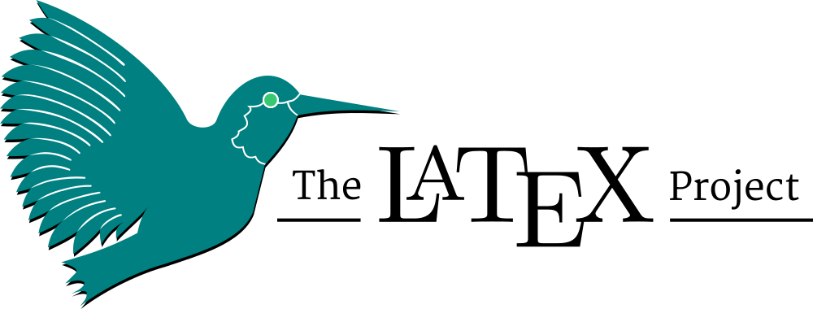

An intermediate-level LaTeX tutorial.LaTeX, pronounced as /ˈlɑːtɛk/, is a document preparation system for high-quality typesetting. It is most often used for technical or scientific documents, but it can be used for almost any form of publishing.
I have covered topics for the manuscript preparation and review process. The presentation itself was completely made in LaTeX (Beamer). It looks clean and minimal. A TEX file is also available to download. I hope you will find this useful. I welcome your suggestions for improvement in the tutorial.
#latex | #research | #writing